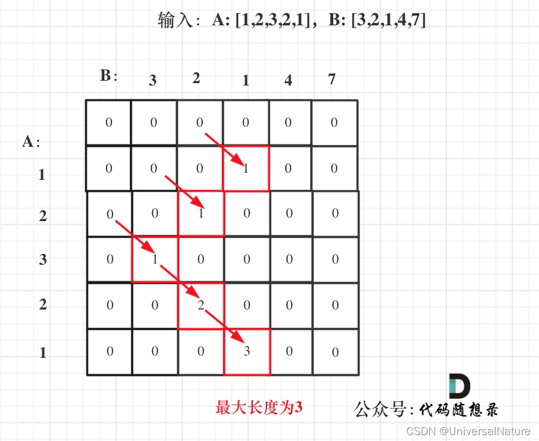

动态规划常用来解决有一个目标还有一些限制，求组合数，最大值等等，例如子序列问题，不管是不是连续子序列,而滑动窗口常用来解决连续子序列问题，快慢指针用来解决一般子序列问题，子序列问题一定要优先想到动态规划
二维数组常是第一个下标i表示0-i的递推，第二个下标表示限制，例如容量是j，必须以j结尾，j是xx之类的，递推公式是对于i这个情况来说，处理它有几种措施，j就在这几种措施中for循环，就有几种情况讨论，或者取最好的情况。
尽量用一维数组做背包问题，因为遍历顺序能体现求组合还是求排列
【动态规划专题班】ACM总冠军、清华+斯坦福大神带你入门动态规划算法
01背包来自动态规划：关于01背包问题，你该了解这些！
滚动数组来自动态规划：关于01背包问题，你该了解这些！（滚动数组）
看见问题默认先物品后容量
1
2
3
4
5
6
7
8
|
for(int i = 0; i < weight.size(); i++) {
for(int j = bagWeight; j>=0; j--) {
if (j>=weight[i]) dp[j] = max(dp[j], dp[j - weight[i]] + value[i]);
}
}
|
最小邮票数，Piggy-Bank都有不可达问题的判断
1
2
3
4
5
6
7
8
9
10
11
12
13
14
15
16
17
18
19
20
21
22
23
24
25
26
| 0-1最小背包问题 求解装满背包的前提下使用物品最少的数量
其中：
邮票总值相当于背包容量，
邮票的面值相当于物品的重量，
邮票的数量相当于物品的总价值，
每张邮票的价值默认为1。
#include<stdio.h>
int dp[20][105],Max=99999999;
int main(){
int v[50],N,i,j,M;
while(scanf("%d",&M)!=EOF){
for(scanf("%d",&N),i=0;i<N;i++) scanf("%d",&v[i]);
for(i=0;i<N;i++) dp[i][0]=0;
for(j=0;j<=M;j++)
if(j==v[0]) dp[0][j]=1;
else dp[0][j]=Max;
for(i=1;i<N;i++)
for(j=1;j<=M;j++){
dp[i][j]=dp[i-1][j];
if(j>=v[i]&&dp[i][j]>dp[i-1][j-v[i]]+1)
dp[i][j]=dp[i-1][j-v[i]]+1;
}
printf("%d\n",dp[N-1][M]<Max?dp[N-1][M]:0);
}
}
|
416. 分割等和子集，1049. 最后一块石头的重量 II，494. 目标和都是从全集中找出子集，使子集的和等于给定数，这类问题可以用背包问题思路解决
完全背包和01背包的区别只有内层背包容量的遍历顺序
1
2
3
4
5
6
|
for(int j = 0; j <= bagWeight; j++) {
for(int i = 0; i < weight.size(); i++) {
if (j - weight[i] >= 0) dp[j] = max(dp[j], dp[j - weight[i]] + value[i]);
}
}
|
多重背包来自动态规划：关于多重背包，你该了解这些！
1
2
3
4
5
6
7
8
9
10
11
12
13
14
15
16
17
18
19
20
21
22
23
24
25
26
27
28
29
| void test_multi_pack() {
vector<int> weight = {1, 3, 4};
vector<int> value = {15, 20, 30};
vector<int> nums = {2, 3, 2};
int bagWeight = 10;
for (int i = 0; i < nums.size(); i++) {
while (nums[i] > 1) {
weight.push_back(weight[i]);
value.push_back(value[i]);
nums[i]--;
}
}
vector<int> dp(bagWeight + 1, 0);
for(int i = 0; i < weight.size(); i++) {
for(int j = bagWeight; j >= weight[i]; j--) {
dp[j] = max(dp[j], dp[j - weight[i]] + value[i]);
}
for (int j = 0; j <= bagWeight; j++) {
cout << dp[j] << " ";
}
cout << endl;
}
cout << dp[bagWeight] << endl;
}
int main() {
test_multi_pack();
}
|
多重背包还有二进制优化的方法
518. 零钱兑换 II，494. 目标和，70. 爬楼梯，吃糖果，377. 组合总和 Ⅳ，96.不同的二叉搜索树，[编程题]整数拆分，放苹果都是计数类问题，计数时要注意dp初始化问题，计数时一般用的是
1
| dp[j] += dp[j - nums[i]];
|
-
如果求组合数就是外层for循环遍历物品，内层for遍历背包
-
如果求排列数就是外层for遍历背包，内层for循环遍历物品，这样可以出现背包里放[1,2]和[2,1]，如果先遍历物品就会导致2一定在1后面
746. 使用最小花费爬楼梯，343. 整数拆分，322. 零钱兑换，474.一和零，279.完全平方数，吃糖果是典型的背包问题，在约束（背包大小，数字总和为定值，自定义限定条件等等）的条件下做最优化问题。474.一和零和139.单词拆分涉及到了字符串拼接。
337.打家劫舍 III，121. 买卖股票的最佳时机等买卖股票问题的情况是到每一步有多种状态，状态转移的时候要从上一步的m种状态综合推出这一步的m种状态
子序列不需要连续，求解需要遍历。序列问题dp[i]都是以v[i]作为结尾的求解结果（这个结果可以是最大和，最长长度等）：300.最长递增子序列此步需要用之前的所有步来推出，拦截导弹 求最长不增子序列，[编程题]最大上升子序列和，[编程题]合唱队形
718. 最长重复子数组和1143.最长公共子序列的区别是子数组是连续的，子序列不一定是连续的，求公共部分要想到元素的二维表：

[编程题]最大连续子序列，注意dp必须是以v[i]结尾的最大连续子序列
1
2
3
4
5
6
7
8
9
10
11
12
13
14
15
16
17
18
19
20
21
22
23
24
25
26
27
28
29
30
31
32
33
34
35
36
37
38
39
40
41
42
| #include<bits/stdc++.h>
using namespace std;
struct state{
int start,end,sum;
state(int s,int e,int s_):start(s),end(e),sum(s_){};
state(){};
bool operator>(const state& s)const{
if (sum!=s.sum) return sum>s.sum;
else if (start!=s.start) return start<s.start;
return end<s.end;
}
};
int main(){
int n;
while (cin>>n){
if (!n) return 0;
vector<int> v(n);
for (int i=0;i<n;i++) scanf("%d",&v[i]);
if (n==1){
if (v[0]<0) cout << 0 << ' ' << v[0] << ' ' << v[0] << endl;
else cout << v[0] << ' ' << v[0] << ' ' << v[0] << endl;
continue;
}
vector<state> dp(n);
bool noPositive=v[0]<0?true:false;
dp[0]=state(0,0,v[0]);
state max=dp[0];
for (int i=1;i<n;i++){
if (v[i]>=0) noPositive=false;
if (v[i]>=dp[i-1].sum+v[i]){
dp[i]=state(i,i,v[i]);
}
else dp[i]=state(dp[i-1].start,i,dp[i-1].sum+v[i]);
max=max>dp[i]?max:dp[i];
}
if (!noPositive) cout << max.sum << ' ' << v[max.start] << ' ' << v[max.end] << endl;
else cout << 0 << ' ' << v[0] << ' ' << v[n-1] << endl;
}
}
|
最大子矩阵，利用最大连续子列和求：最大子矩阵所在行是第i行到j行，遍历每一个行组合，求它们按列求和之后的最大连续子列和
1
2
3
4
5
6
7
8
9
10
11
12
13
14
15
16
17
18
19
20
21
22
23
24
25
26
27
28
29
30
31
32
33
34
35
36
37
38
39
40
41
42
43
44
45
46
47
48
49
50
51
52
53
54
55
56
57
58
59
60
61
62
63
64
65
66
67
68
69
70
71
72
73
74
75
76
| #include <cstdio>
#include <iostream>
#include <climits>
#include <cstring>
using namespace std;
const int MAXN = 100 + 10;
const int INF = INT_MAX;
int matrix[MAXN][MAXN];
int dp[MAXN];
int coltotal[MAXN][MAXN];
int arr[MAXN];
int MaxSubsequence(int n){
fill(dp, dp+n, -INF);
int ans = -INF;
for(int i=0; i<n; i++){
if(i==0){
dp[i] = arr[i];
}else{
dp[i] = max(arr[i], dp[i-1] + arr[i]);
}
if(dp[i] > ans){
ans = dp[i];
}
}
return ans;
}
int MaxSubmatrix(int m, int n){
for(int j=0; j<n; j++){
coltotal[0][j] = matrix[0][j];
}
for(int i=1; i<m; i++){
for(int j=0; j<n; j++){
coltotal[i][j] = matrix[i][j] + coltotal[i-1][j];
}
}
int ans = -INF;
for(int i=0; i<m; i++){
for(int j=i; j<m; j++){
for(int k=0; k<n; k++){
if(i==0){
arr[k] = coltotal[j][k];
}else{
arr[k] = coltotal[j][k] - coltotal[i-1][k];
}
}
int tmp = MaxSubsequence(n);
if(tmp > ans){
ans = tmp;
}
}
}
return ans;
}
int main(){
int n;
while(scanf("%d", &n) != EOF){
for(int i=0; i<n; i++){
for(int j=0; j<n; j++){
scanf("%d", &matrix[i][j]);
}
}
int ans = MaxSubmatrix(n, n);
printf("%d\n", ans);
}
return 0;
}
|
The Triangle，LightOJ 1004 Monkey Banana Problem 都是在正整数中找最大序列和